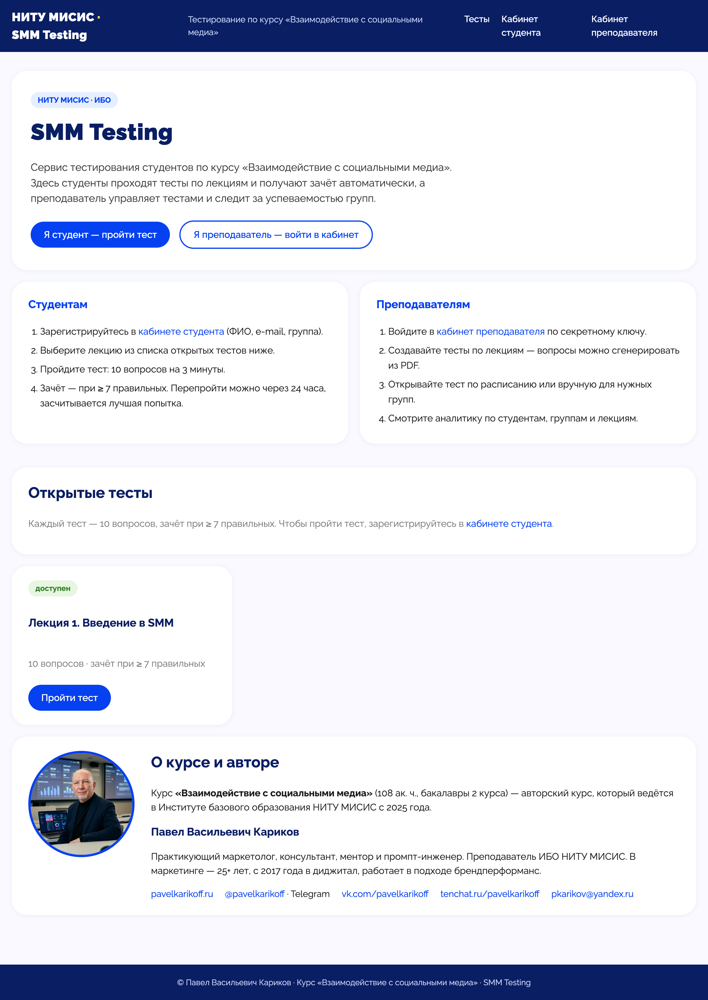
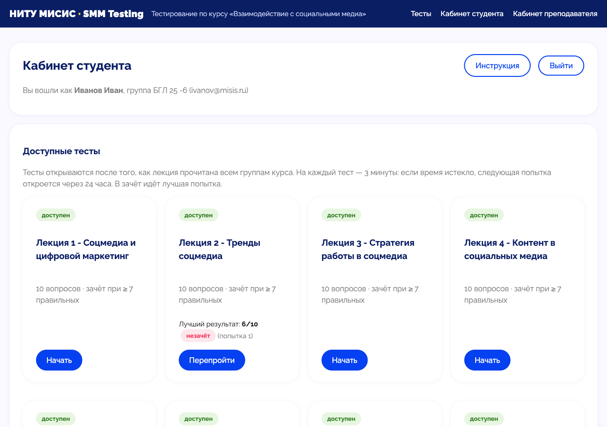
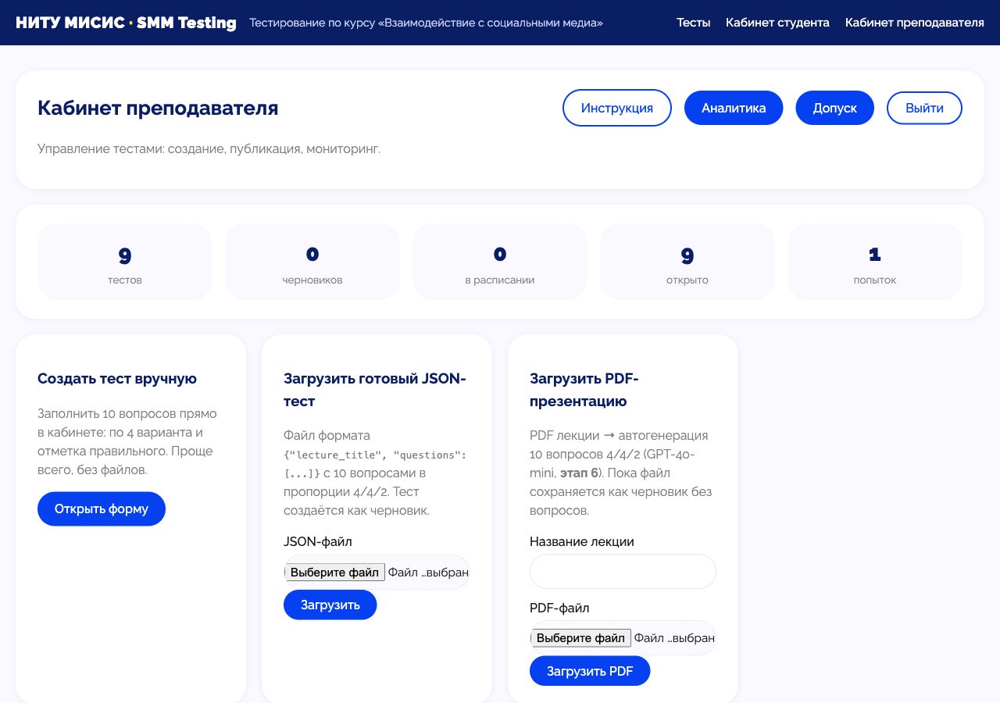

Система автоматизированного тестирования студентов
по курсу «Взаимодействие с социальными медиа»
Курс SMM в МИСИС — 9 лекций, поток студентов. После каждой лекции нужно проверить, усвоен ли материал, и решить, кто допущен к финальному зачёту.
≥ 7 правильных из 10. Порог и число вопросов — в
config.py, меняются без правки логики.
Пройдены все 9 тестов и суммарно ≥ 81 правильного ответа из 90 (≈ 90%).
open и наступившие scheduled).@misis.ru (домен проверяется).@misis.ru от имени преподавателя (Яндекс SMTP, опционально).scheduled → авто-open).draft → scheduled → open → closed.
Базовое понимание темы, фактология. Проверяют, что материал в целом усвоен.
Применение знаний, анализ кейсов. Уход от зубрёжки к пониманию.
Нестандартное применение, рассуждение. То, что сложнее «прогнать» через LLM.
Структура 4/4/2 валидируется при загрузке JSON — тест не пройдёт проверку, если пропорция нарушена.
Поле difficulty: easy | medium | logic. В кабинете видна разбивка по уровням — где студенты ошибаются чаще.
| Слой | Технология | Почему |
|---|---|---|
| Backend | Python + FastAPI | Асинхронность, автодокументация /docs, «показный» для диплома |
| БД | SQLite + SQLAlchemy | Файл без сервера, портативность, ORM упрощает запросы преподавателя |
| Фронтенд | Jinja2 + HTML/CSS | Один проект без сборки SPA — результат виден сразу |
| Генерация тестов | OpenAI SDK + GPT-4o-mini | LLM создаёт 4/4/2 из текста PDF; дешёвая и быстрая модель |
| Парсинг PDF | pdfplumber | Извлечение текста слайдов из презентации |
| Расписание | APScheduler | Автооткрытие тестов в заданное время |
| smtplib + email.mime | Доставка результатов на @misis.ru от имени преподавателя | |
| Запуск | Uvicorn | Стандартный ASGI-сервер для FastAPI |
Альтернативы: Flask (проще, но менее «показной»), PostgreSQL (мощнее, но избыточен для одной группы), React-фронт (отдельная сборка, оверхед для 10 вопросов). Для генерации рассматривался Claude API — выбран GPT-4o-mini как сторонняя LLM по требованию задачи.
Подписанная кука (SessionMiddleware), без отдельного auth-сервиса.
В prod старт падает на дефолтных секретах; кабинет — по паролю.
Все пороги и структура — в config.py, секреты — в .env.
Vibe-coding — не «код без программиста», а результативная связка человека и ассистента: архитектурные решения и критерии за автором, реализация и рутину — за Claude Code.
Автогенерация тестов из PDF (GPT-4o-mini) · гибридный режим JSON · расписание открытия (APScheduler) · таймер 3 мин + поток по 1 вопросу · перепрохождение с кулдауном 24 ч · лучшая попытка в зачёт · аналитика по вопросам и уровням · итоговый допуск 81/90 · email-уведомления (Яндекс SMTP) · демо-автосид для Render · skill развёртывания для коллег.
render.yaml — сервис описан как кодDEMO_AUTOSEED=1 — на эфемерном диске при старте поднимает демо-тест и студентовAI_MOCK=1 — демо-вопросы без ключа OpenAISECRET_KEY генерируется Render, TEACHER_PASSWORD — вручнуюДиск эфемерный — SQLite обнуляется при перезапуске (для демо ок, боевой продакшен — отдельная задача). Холодный старт ~1 мин: открыть демо заранее и дождаться загрузки главной.

Студент входит по корпоративной почте @misis.ru и видит
доступные тесты по лекциям и свои результаты.

Создание тестов (PDF/JSON/вручную), сводка по 9 лекциям, аналитика попыток и итоговый допуск к зачёту — в одном кабинете.

Переход с демо-деплоя на VPS с постоянной БД и реальным вызовом GPT-4o-mini (AI_MOCK=0).
Банк вопросов >10 на лекцию, случайный набор 10 под каждого студента, перемешивание порядка вопросов и вариантов.
Профилирование SQLite под конкурентной записью, при необходимости — PostgreSQL, несколько воркеров за балансировщиком, locust/wrk.
Перевод SMTP на karikov.pv@misis.ru и верификация владения @misis.ru у студентов.
Архитектура курсо-независимая: лекция = единица материала, тест = 10 вопросов 4/4/2. Чтобы запустить по другому курсу —
свои PDF/JSON, пороги в config.py, домен почты и SMTP. Применимо для любой дисциплины.
Проект показал: vibe-coding как связка автора и Claude Code позволяет за 9 дней пройти от идеи до работающего сервиса с деплоем, не жертвуя архитектурной чистотой. Готов к боевому запуску в весеннем семестре 2027.